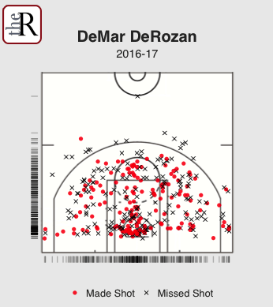
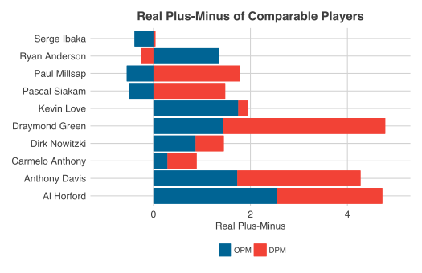

The following are miscellaneous data visualizations I have worked on over the past few years. I tend to design my charts in a similar fashion to those featured in FiveThrityEight, The Ringer, or New York Times.
Technologies: D3.js, R, Python, Tableau
For optimal browsing experince, please do not view this site on mobile.
US Election
The following interactives were created for The Reckoner of MGCI, as part of an article analyzing Donald Trump's victory in the 2016 US Presidential Election.
The first interactive is a map of the United States containing multipe levels of data comparing the results of the 2016 election to that of Obama's 2012 re-election. It was created using d3.js with data compiled from the Associated Press. A friend, Julien Lin, helped write the small blurbs pertaining to each state.
The second interactive is a scatter plot showcasing the relationship between the percentages of white, non-college educated voters and voter turnout in a state. It was created using D3.js with data compiled from the United States Federal Election Committee.
Sports
Developed for a Reckoner article, the first visualization is a shot chart of DeMar DeRozan from halfway through the 2016-17 NBA season. It was created with R (ggplot2), using data scraped (using the Python library BeautifulSoup) from the NBA Stats website. Shot location charts us to see where an offensive player takes (and makes) most of their shots; with this visualization, it's easy to see how proficient DeRozan is at the midrange shot, a rarity in today's NBA. Furthermore, the single-coordinate rug plots allows us to see that he is most successful at creating shots along the baseline.
The following force graph shows the common line pairings between Toronto Maple Leafs forwards during rhe first two months of the 2016-17 season. The size of the cirlce is proportional to a player's average time on ice, while the thickness of the lines is indicative of the lines represents the average time on ice a pair of players spend on the ice together. Colours represent the most common line pairings. It was developed using D3.js with data from Daily Faceoff.
The following chart was created using Tableau and displays the real plus-minus (RPM) broken down by offensive (OPM) and defensive plus-minus (DPM) of players comparable to the Raptors' Serge Ibaka. It was developed for an article in The Reckoner of MGCI.
This scatter plot created using D3.js shows the change in performace with/without Steph Curry for players on the 2017-18 Golden State Warriors during the regular season. The was created to showcase Curry's 'gravity', his ability to create space (and therefore more favourable scoring chances) for teammates when on the floor.